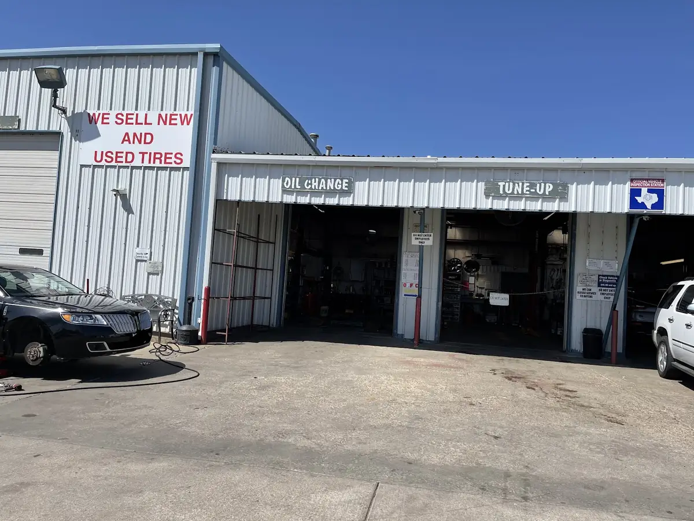
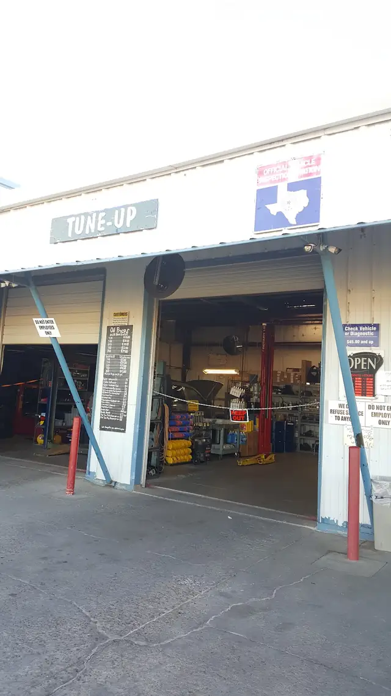

Bay 01
New & used tires
The sign on the building reads “We sell new and used tires.” Tire replacement is one of the topics reviewers mention most.
Tires, oil changes, tune-ups and repairs at 711 N Eastern St in Amarillo. Reviewers say Abdul got them back on the road. Call the shop first.
(806) 373-8320

Abdul Auto Repair & Tires is an auto repair shop at 711 N Eastern St in Amarillo, Texas. The building advertises oil changes, tune-ups and new and used tires.
Customers write about Abdul and his son, fair prices and straight answers. Their own words are further down this page.
Every service here comes from the shop’s own signs, its Google listing or what customers wrote. There is no price list online, so call for a number.
The sign on the building reads “We sell new and used tires.” Tire replacement is one of the topics reviewers mention most.
Oil change is painted on the shop front. Call to ask what to expect for your vehicle.
Tune-up is painted on the shop front, right beside the oil change bay.
A reviewer had the struts and shocks changed on a 2008 F-150 and said it rides smooth again.
A traveler whose radiator ruptured outside of town says Abdul saved their spring break trip.
A reviewer with a truck that would not start says Abdul stayed after closing to troubleshoot it.
Google lists general repairs and maintenance for this shop. Call and describe what your vehicle is doing.
I was traveling to Colorado when my vehicle had electrical issues and wouldn't start on a Sat morning. I called and texted all the mobile mechanics, not a single one was able to help(most never responded to calls or text). Abdul's Auto was recommended by the hotel staff as a reliable shop. Abdul's response when I called was tow it here and let me see if I can help get you on the road. He was not able to get it repaired on Sat, this was not due to lack of trying. He stayed after closing his shop to try and trouble shoot the problem. Abdul finally found the issue and had us back on the road, I was worried about the cost due to all the hours he put into fixing my truck. I was very surprised at what he in the end, I am so thankful for Abdul and his son. If you are looking for a friendly, honest hardworking mechanic this is the one.
Abdul is an amazing mechanic and runs a terrific business. He single handedly saved my spring break trip when my radiator ruptured just outside of town! Absolutely highest quality service, extremely pleased, would recommend for anyone. Thank you so much!!
Took our 08 F150 with 138,00 miles to get the struts and shocks changed out. Very reasonably priced and did it in a timely manner. Pick up rides smooth again. Thanks Abdul
Selection of verbatim Google reviews, rating as shown on Google November 2026. View the Google profile to read all reviews.
Photos from the shop’s Google Maps listing.
| Monday | 9 AM – 6 PM |
| Tuesday | 9 AM – 6 PM |
| Wednesday | 9 AM – 6 PM |
| Thursday | 9 AM – 6 PM |
| Friday | 9 AM – 6 PM |
| Saturday | 9 AM – 2 PM |
| Sunday | Closed |
Hours as listed on Google. Call to confirm before you come.
As listed on Google: Monday to Friday 9 AM – 6 PM, Saturday 9 AM – 2 PM, closed Sunday. Hours can change, so call (806) 373-8320 to confirm before you come.
The sign on the shop says “We sell new and used tires,” and tire replacement is a topic in the Google reviews. Call to ask about your size.
There is no price list online, so there is no number to quote here. Reviewers describe the prices as reasonable. Call the shop, describe the problem and ask.
Call first. The shop’s number is the fastest way to ask about your vehicle and get an answer. One reviewer called from a hotel and was told to tow the truck in.
711 N Eastern St, Amarillo, TX 79107.
Describe what your vehicle is doing. The number below goes straight to the shop.